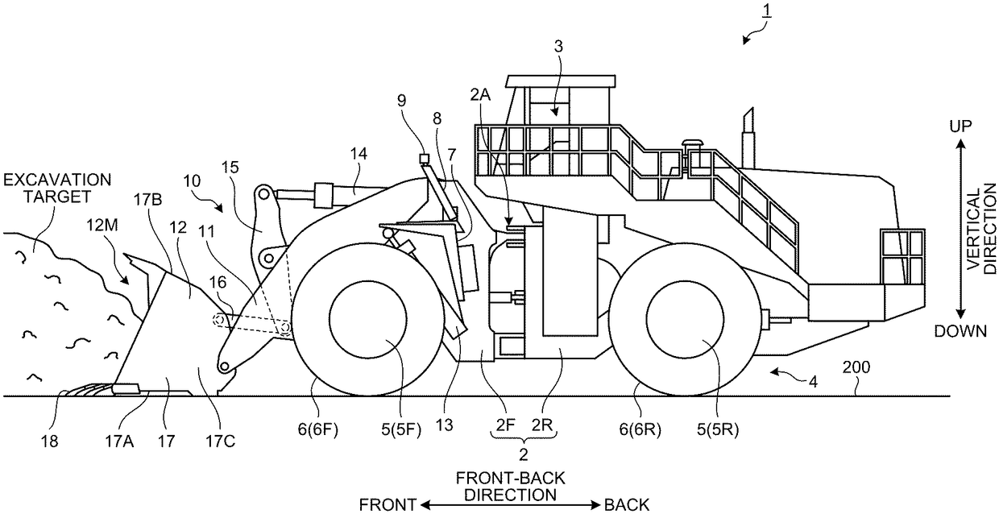

Technology intelligence report
Historical fixture: dump-truck patent briefing (publications from February–March 2026)
1
Patent records
1
Company groups
1
Technical topics
Recently published patent overview
Company technology summaries
All applicants
1 records
Imaging (1)
- The monitoring system uses first and second imaging devices to capture the work equipment and ground from defined viewpoints, then applies defect- and boulder-detection units to identify hazards.
Patent details
All applicants
1 records
Imaging (1 records)
US20260071412A1
Pending substantive examination in the historical source; reverify before use
KOMATSU LTD.
Applied 2023-02-03
Published 2026-03-12
Work machine monitoring system and work machine monitoring method
Technical problem
Changes in work content and operating conditions can expose a work machine to damage; real-time monitoring may support prevention or earlier detection.
Technical approach
First and second imaging devices capture work equipment and the ground from defined viewpoints, while defect- and boulder-detection units identify the respective conditions.
Technical benefit
The disclosed monitoring approach is intended to detect defects and potential hazards earlier and reduce damage risk.

Related literature (1455 matches; showing 20)
AI-assisted literature synthesis
The historical literature result set is not suitable for technology synthesis because most retrieved records are lexical false positives. Of the 20 displayed records, only a small subset concerns dumping vehicles, rail-car dumpers, or dump-truck operations, and those records span 1874–2016 with different technical purposes. Before using literature evidence, narrow the query with vehicle, mining, earthmoving, haulage, hydraulic-bed, chassis, braking, payload, or work-machine concepts; exclude person names, waste enforcement, lasers, and magnetotelluric terminology; then review precision and recall manually.
#### Record-level disposition
- [1] Exclude: web-accessibility system named Tipper.
- [2] Review historical relevance: dumping car; no abstract.
- [3] Review historical relevance: dumping car; no abstract.
- [4] Exclude: gemology dictionary entry.
- [5] Review historical relevance: dumping car; no abstract.
- [6] Exclude: person-name match.
- [7] Review historical relevance: dumping car; no abstract.
- [8] Retain for adjacent rail-car-dumper reliability context.
- [9] Insufficient evidence.
- [10] Verify; likely nontechnical permit content.
- [11] Review historical relevance: dump car; no abstract.
- [12] Exclude: location photograph.
- [13] Exclude: laser cavity-dumper system.
- [14] Exclude: addiction book review.
- [15] Review historical relevance: dumping wagon; no abstract.
- [16] Retain for adjacent fleet economics and operations.
- [17] Exclude: illegal waste disposal.
- [18] Exclude: illegal waste disposal.
- [19] Exclude: marine waste disposal.
- [20] Exclude: magnetotelluric tipper data.
- The patent legal status is historical and must be reverified.
- The patent count reflects a single returned record, not a complete family landscape.
- The literature query has low precision and is intentionally retained as a negative test case.
- Citation counts are historical source values and are not quality or relevance scores.
- No conclusion in this fixture should be reused without a current search.
#### Record-level disposition
- [1] Exclude: web-accessibility system named Tipper.
- [2] Review historical relevance: dumping car; no abstract.
- [3] Review historical relevance: dumping car; no abstract.
- [4] Exclude: gemology dictionary entry.
- [5] Review historical relevance: dumping car; no abstract.
- [6] Exclude: person-name match.
- [7] Review historical relevance: dumping car; no abstract.
- [8] Retain for adjacent rail-car-dumper reliability context.
- [9] Insufficient evidence.
- [10] Verify; likely nontechnical permit content.
- [11] Review historical relevance: dump car; no abstract.
- [12] Exclude: location photograph.
- [13] Exclude: laser cavity-dumper system.
- [14] Exclude: addiction book review.
- [15] Review historical relevance: dumping wagon; no abstract.
- [16] Retain for adjacent fleet economics and operations.
- [17] Exclude: illegal waste disposal.
- [18] Exclude: illegal waste disposal.
- [19] Exclude: marine waste disposal.
- [20] Exclude: magnetotelluric tipper data.
Fixture limitations
- The patent legal status is historical and must be reverified.
- The patent count reflects a single returned record, not a complete family landscape.
- The literature query has low precision and is intentionally retained as a negative test case.
- Citation counts are historical source values and are not quality or relevance scores.
- No conclusion in this fixture should be reused without a current search.
1
Proceedings of the 33rd Annual ACM Conference Extended Abstracts on Human Factors in Computing Systems, 2015, pp. 1773–1778
Most senior citizens in the U.S. use the Internet regularly but can encounter basic issues they cannot solve themselves. The researchers used contextual inquiry and an online survey to study these difficulties, then designed Tipper, a browser-based contextual-help system. This record is unrelated to dump-truck technology and is a false positive caused by lexical ambiguity.
8
Rio Tinto Iron Ore operates a large private rail network serving multiple mine sites. Wagons are unloaded through rotary car dumpers. Repeated derailments occurred at the outgoing side of dumpers at Parker Point. The work assessed site conditions, applicable standards, root causes, and why an earlier passive check-rail mitigation did not operate as intended.
12
Photograph of the south side of a washout dump along Highway 10, facing west at 11:40 a.m.
13
Journal of Changchun Institute of Optics and Fine Mechanics, 2004
The work describes a cavity-dumper driver for an acousto-optic cell that produces laser-pulse signals at multiple repetition rates.
14
Alcoholism Treatment Quarterly, 2013, vol. 31 (1), pp. 161–163
16
The Indiana Department of Highways formed a cross-functional committee to assess whether tandem dump trucks should be removed from its fleet. The team reviewed work records, programs, calendars, costs, and operational value.
20
Two-dimensional magnetotelluric forward simulations were used to examine tipper components for models with horizontal electrical interfaces. The work summarizes response anomalies and provides a basis for interpreting measured magnetotelluric tipper data.